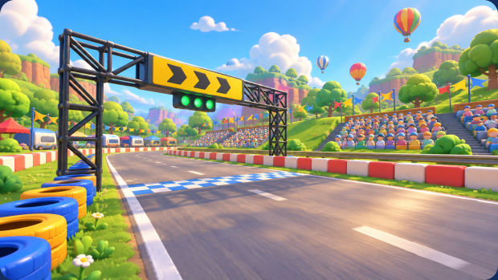
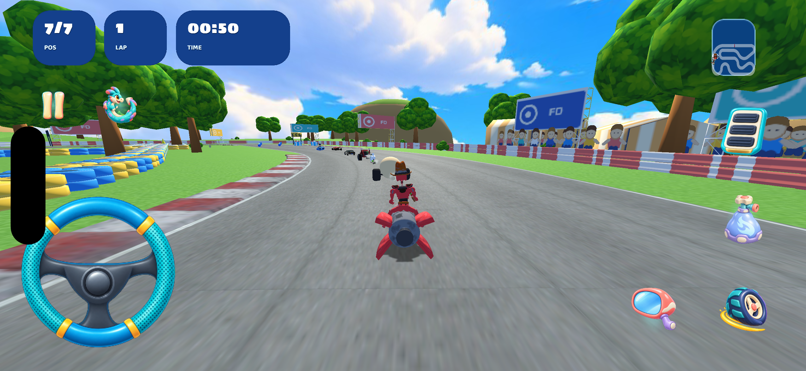
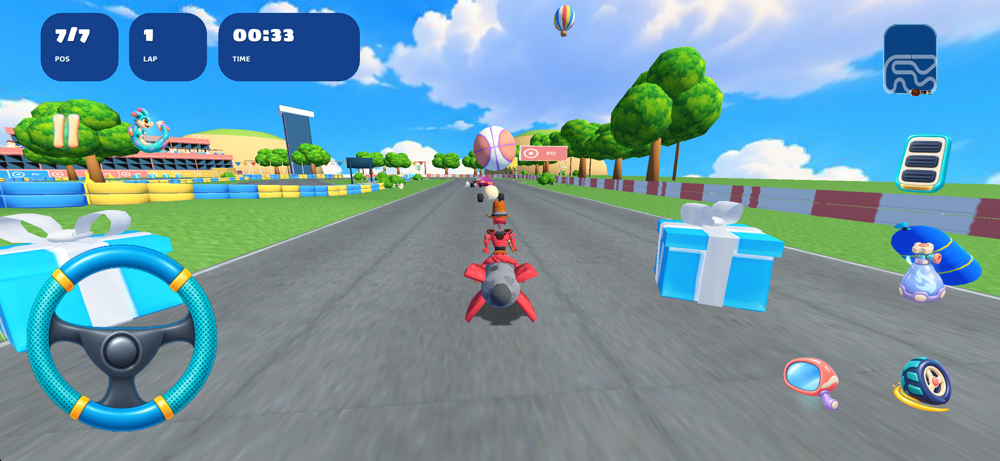
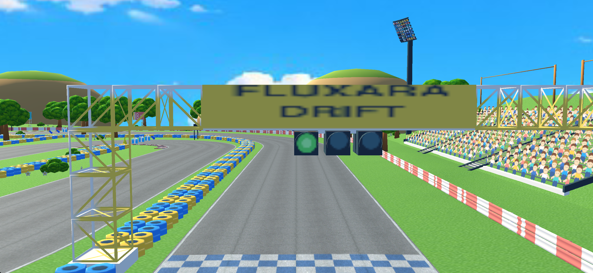
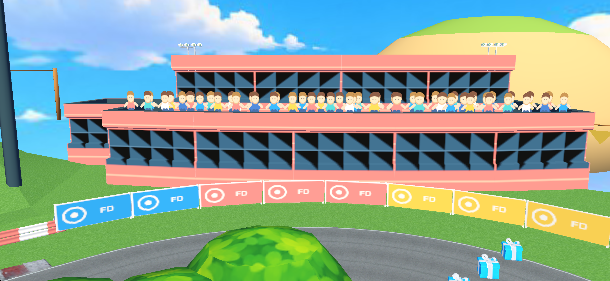

Motorsport Land
Единый стиль гоночного фестиваля: округлые деревья, цветные шины, коралловые ограждения, трибуны со стилизованными зрителями, флажки и воздушные шары. Дорога и игровые данные сохранены.
Изменённый Blender-проект · Геометрия и бюджет · Проверка ресурсов
Референс

| Элемент | Изменение |
|---|---|
| Зелень | 55 деревьев, 50 кустов, 342 цветочных и травяных деталей. Общие модели шестой карты переиспользованы. |
| Фон | 6 общих холмов, 3 воздушных шара, 10 гирлянд флажков. |
| Трибуны и окружение | Исходные конструкции сохранены. Фотографические зрители и лист рекламы заменены компактными авторскими векторными атласами. |
| Направление | 10 знаков только у поворотов. На ферме и рекламных щитах нет направляющих стрелок. |
Окончательное визуальное согласование не записано. Игровой свет проще иллюстрации; зрители на трибунах остаются текстурными плоскостями. Это адаптация референса к исходной трассе, не точная копия изображения.
Игровые кадры





Вес
| Измерение | Результат |
|---|---|
| Исходная папка карты | 21,16 МБ |
| Текущая папка карты | 15,04 МБ |
| Новые общие ресурсы | 9,063 байт; модель шара использует уже существующую палитру |
| Карта вместе со всеми новыми общими ресурсами | 15,05 МБ, уменьшение на 6,11 МБ |
| Треугольники с каждым размещением | 230,574 → 270,190; +17.18%, в пределах ±20% |
| Распакованное приложение | 294,53 МБ, Debug iOS Simulator. Это не размер IPA или скачивания. |
Новые экземпляры используют реальные игровые библиотеки и координаты. Копия меша для каждого дерева или куста в карту не записана. Старые встроенные конструкции этой трассы ещё остаются в основном меше; общий этап их переноса в пул предусмотрен после готовности всех десяти карт. Музыка сохранена.
Проверки
Вершины, нормали и индексы всех сохранённых буферов сверены с исходником. UV дороги и бордюров также исходные. track.xml, graph.xml, quads.xml, игровые предметы, стартовые параметры и контрольные линии сохранены. Физические свойства поверхностей совпадают с исходными. Изменены текстуры декора и грунта; удалены старые декоративные плоскости леса, дополнительные плакаты-зрители и старые знаки.
Вершины всех новых общих моделей проверены в игровых координатах: проекция на полотно дороги не обнаружена. При размещении дополнительно проверялись центр и периметр объектов. Итоговый Blender-файл повторно открыт, недостающих текстур нет, связанные экземпляры совпадают с экспортом. Ресурсы проекта, сборки и установленного приложения сверены по SHA-256.
Для Lap Trial зафиксировано естественное завершение события. Отдельная обычная гонка проверяет полный круг. Осмотр камерой дополняет игровые кадры, но не заменяет прохождение. Все сложности и обратное направление не проверены, замер производительности не выполнялся.
Превью карты взято из игрового движка. Превью кампании собрано из него штатным скриптом упаковки.